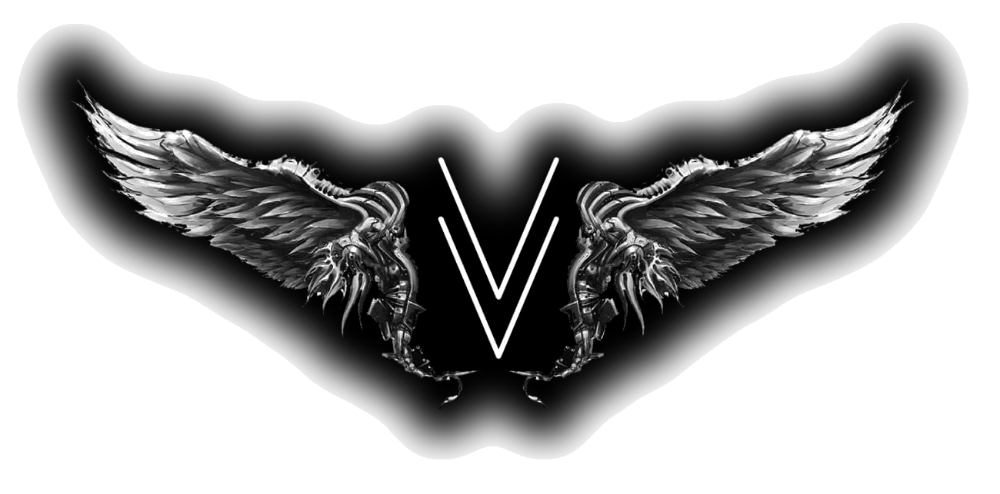

No resources match your search. Try a different term.

~ Vigilant Valkyrie ~
Helping Female Veterans
A curated directory of organizations standing watch for women who served. Find counseling, community, retreats, advocacy, and care - all in one place.
No resources match your search. Try a different term.